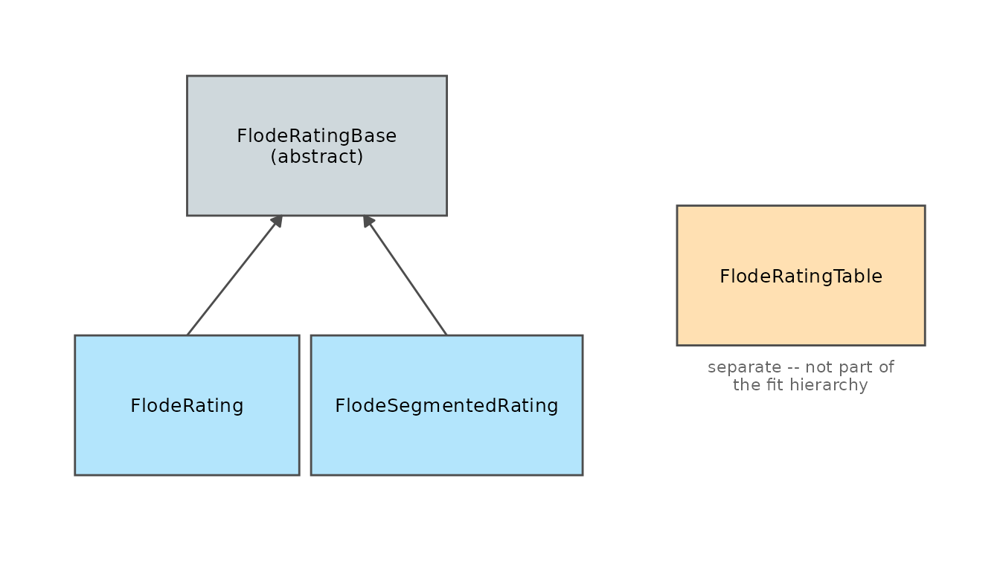

Working with reach.rate's S7 Objects
Jonathan Payne, Environment Agency Flood Forecasting
September 2026
Source:vignettes/s7_objects_guide.Rmd
s7_objects_guide.RmdEvery other vignette in this package uses FlodeRating,
FlodeRatingTable, and their relatives without pausing to
explain them – rating_curves_guide.Rmd’s “The objects”
section gives them one paragraph before moving on to fitting. This
vignette is that paragraph, expanded: what these objects actually are,
how to inspect and check them, and what their built-in guarantees buy
you that a plain list or data.frame wouldn’t.
Why S7 at all
S7 is a typed object
system for R, built jointly by the R Consortium and Posit as a successor
to S4 that keeps S4’s real guarantees (typed properties, validators that
run on construction) with a plainer syntax. The practical consequence
for you as a user is small and mostly cosmetic: you read a fitted
rating’s contents with @ instead of $. What it
buys the package is not cosmetic – a FlodeRating cannot
exist in a broken state, because its validator runs before you ever get
to hold one.
The class hierarchy

FlodeRatingBase is abstract – you never construct one
directly; it exists only to hold what FlodeRating (the
result of rate_optimise()) and
FlodeSegmentedRating (the result of
rate_optimise_segmented()) have in common:
@gaugings, @fit_starts, @status,
@provenance. FlodeRatingTable sits apart from
that hierarchy entirely – it’s the equation-table representation
gap_check’s functions and apply_rating() work
with, not a fit in its own right, and it doesn’t inherit anything from
FlodeRatingBase.
@-access and print()
set.seed(1)
stage_m <- seq(0.3, 3, by = 0.1)
discharge_cms <- 5 * stage_m^1.5 * exp(rnorm(length(stage_m), sd = 0.03))
fit <- rate_optimise(discharge_cms, stage_m)
fit # each class has its own print method
#> <FlodeRating> 1 limb(s), status: independently_fitted
#> limb lower_stage_m upper_stage_m C a n rmse_cms
#> <int> <num> <num> <num> <num> <num> <num>
#> 1: 1 0.3 3 5.754582 0.08356371 1.394315 0.3719334
#> r_squared
#> <num>
#> 1: 0.9976098
class(fit) # the full inheritance chain, most-specific first
#> [1] "reach.rate::FlodeRating" "reach.rate::FlodeRatingBase"
#> [3] "S7_object"
fit@limbs[, .(C, a, n, rmse_cms, r_squared)]
#> C a n rmse_cms r_squared
#> <num> <num> <num> <num> <num>
#> 1: 5.754582 0.08356371 1.394315 0.3719334 0.9976098print() gives a one-line summary plus the coefficient
table, rather than R’s default (and much less readable) dump of every
property. class(fit) shows the full chain –
reach.rate::FlodeRating,
reach.rate::FlodeRatingBase, S7_object –
confirming a FlodeRating really is a
FlodeRatingBase underneath, matching the diagram above.
Validators: what you can’t accidentally build
The property that matters most in practice: constructing one of these classes with something structurally wrong fails immediately, with a specific error, rather than producing an object that only breaks later when some downstream function trips over the missing piece.
FlodeRating(
limbs = data.table(limb = 1, C = 1, a = 0, n = 1), # missing lower_stage_m/upper_stage_m
gaugings = data.table(discharge_cms = 1, stage_m = 1)
)
#> Error:
#> ! <reach.rate::FlodeRating> object is invalid:
#> - limbs is missing required column(s): lower_stage_m, upper_stage_mThat error fires at construction time, naming exactly which columns
are missing – not three functions later, as an obscure NULL
or a cryptic subscript error somewhere that merely assumed
those columns existed. Every exported class in this package validates
its own structural requirements (required columns,
C/n positivity, contiguous limb bounds, and
more) the same way.
S7_inherits(): accepting either representation
Several exported functions –
plot_rating_cross_section(),
apply_rating_inverse(), graft_rating() among
them – accept either a FlodeRating or a
FlodeRatingTable and quietly bridge the former to the
latter internally. S7_inherits() is how they tell which one
they were handed, and it’s directly usable in your own code if you’re
writing a function meant to work with whichever representation the
caller holds:
S7::S7_inherits(fit, FlodeRating)
#> [1] TRUE
S7::S7_inherits(fit, FlodeRatingBase) # also TRUE -- FlodeRating IS a FlodeRatingBase
#> [1] TRUE
rating_dt <- data.table(lower_level = 0, upper_level = 3, C = 5, a = 0, n = 1.5)
tbl <- FlodeRatingTable(table = rating_dt)
S7::S7_inherits(tbl, FlodeRating) # FALSE -- a table is not a fit
#> [1] FALSE
accept_either <- function(x) {
if (S7::S7_inherits(x, FlodeRating)) "got a fit" else if (S7::S7_inherits(x, FlodeRatingTable)) "got a table" else stop("neither")
}
accept_either(fit)
#> [1] "got a fit"
accept_either(tbl)
#> [1] "got a table"inherits(x, "FlodeRating") (base R’s own generic) does
not work reliably here – S7 classes are namespace-qualified
("reach.rate::FlodeRating", visible in the
class(fit) output above), so S7_inherits()
exists specifically to check against the class object itself rather than
a string you’d have to get exactly right.
Reading the audit chain: @status and
@previous
FlodeRatingTable (and, via FlodeRatingBase,
the fit classes too) carries @status and
@previous so that amending a rating never silently loses
what it was amended from:
rating_dt <- data.table(
lower_level = c(0, 1.5), upper_level = c(1.5, 3),
C = c(3, 5), a = c(0, 0.1), n = c(1.5, 1.6)
)
tbl <- FlodeRatingTable(table = rating_dt)
tbl@status
#> [1] "independently_fitted"
is.null(tbl@previous)
#> [1] TRUE
aligned <- align_limb_equations(tbl)
aligned@status
#> [1] "post_fit_aligned"
aligned@previous@status
#> [1] "independently_fitted"
identical(aligned@previous@table, tbl@table) # the exact object it was built from
#> [1] TRUEaligned@previous isn’t a copy or a re-derived
approximation – it’s the literal pre-amendment object. Chain several
amendments and you can walk the whole history backwards,
@previous@previous@previous..., until you reach a
NULL – the original, independently-fitted or
independently-built starting point. This is what
vignette("rating_curves_guide") means when it calls this
“an audit trail by construction rather than by discipline”: there is no
code path that produces an amended table with nowhere to point
@previous at.
Shared generics: one name, dispatched by class
Three functions work identically regardless of which class you’re holding, because they’re registered as S7 methods against shared generics rather than being separate functions per class:
rating_plot(fit) # works on FlodeRating, FlodeSegmentedRating, FlodeRatingTable
apply_rating(fit, stage_dt) # same
as_rating_table(fit) # converts any fit class to FlodeRatingTableYou don’t need to know or check which class you’re holding to call any of these three – S7’s method dispatch picks the registered implementation for whatever class the object actually is. That’s the payoff of the class hierarchy in the diagram above: it’s not just documentation of what properties exist where, it’s what makes “call the same function regardless of representation” actually work.
Where to go next
-
vignette("rating_curves_guide")– “The objects” for where this material first appears in context, and the running example these classes are built around throughout the rest of that vignette. -
?FlodeRatingBase,?FlodeRating,?FlodeSegmentedRating,?FlodeRatingTable– full property reference for each class. - S7’s own documentation for the object system itself, independent of this package.